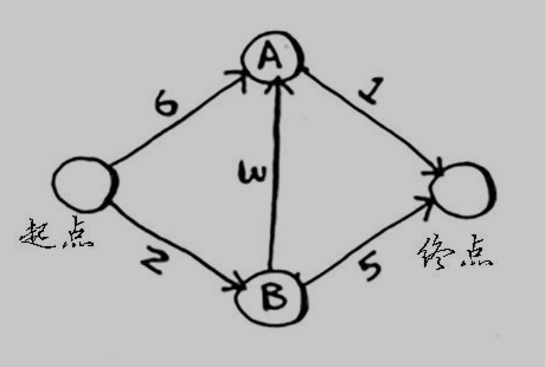
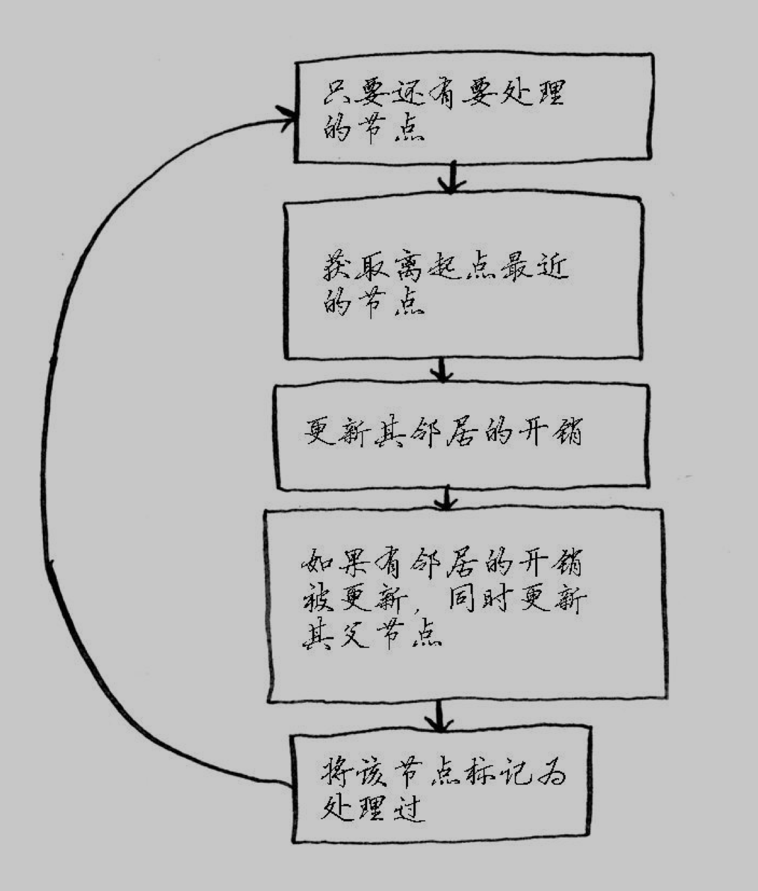

基础算法
最近打算学习一些算法，这里先对一些基础算法只是进行重温，对算法的知识点进行一些总结，毕竟有文字输出效果会更好。
概论
选择排序
递归
递归是一种非常优雅的解决问题的方式。它可以把复杂的问题逐步分解成简单的问题，逐步得到结果。
递归就是在函数中，满足递归条件，就调用函数自身，直到满足基线条件，递归返回。
每个递归函数都有两部分：
- 基线条件：函数不再调用自己，避免形成无限循环。
- 递归条件：函数调用自己。
栈
栈是计算机中一种非常常见的数据结构，可以进行数据的压入（插入）和弹出（删除并读取）。
调用栈
当函数调用时，计算机首先会为该函数调用分配一块内存，存储函数调用设计的所有变量值。当函数内部调用其他函数时，计算机就会为内部调用函数也分配一块内存，第二块内存位于第一块内存的上面，当函数调用返回，第二块内存就会从栈顶弹出。这就被称为调用栈。
递归调用栈
递归调用栈中包含所有未完成的函数调用。在递归中，在最终返回结果前，每个函数都还未完成，所以栈中会存储每个调用函数的信息，每个函数调用都要占用一定的内存。所以如果栈很高，就会占用非常多的内存资源。解决方法如下：
- 重新编写代码，使用循环。
- 使用尾递归，这个貌似比较高级，待深究。
快速排序
这里要用到一种分而治之的思想（divide and conquer, D&C），即递归式问题解决方法。
D&C原理
D&C的工作原理：
- 找出简单的基线条件；
- 确定如何缩小问题的规模，使其符合基线条件。
这里有一个好玩的问题：
假设你是一个农场主，有一块168*64的土地。
现在要你均匀分成正方形土地，且分的方块要尽可能大，你会怎样分？
这里涉及到一个欧几里得算法的问题：又称辗转相除法，是指用于计算两个正整数a，b的最大公约数。
我们可以先从这块地中划出两个最大的方块，然后对剩下的一小块地再次划出最大的方块，就这样递归，直到没有剩下地块为止。这样我们就使用的递归的方式来解决问题。
快速排序
工作原理：
- 从数组中选择一个元素，这个元素成为基准值（pivot）；
- 找出比基准值小的元素以及比基准值大的元素，这被称为分区。分区后得到一个由所有小于基准值的数组成的子数组，一个由所有大于基准值的数组成的子数组，两个子数组是无序的；
- 然后对两个子数组进行快速排序。
下面是快速排序的代码：
|
|
时间复杂度
快速排序的性能高度依赖你选择的基准值。
- 最糟情况：始终选择第一个值作为基准值，则调用栈的高度为n；
- 最佳情况：始终将中间值作为基准值，则调用栈的高度为log n。
因为每层栈需要的时间为O(n)，所以时间复杂度方面：
- 最佳情况：O(n) * O(log n) = O(n log n)
- 最糟情况：O(n) * O(n) = O(n2)
最佳情况也是平均情况，只要每次都随机选择一个数组元素作为基准值，快速排序的平均运行时间将为O(n log n)。快速排序是最快的排序算法质疑，也是D&C典范。
散列表
散列表我们非常熟悉，在Python中就是字典，在JavaScript中就是对象，等。每一种语言中都有自己对于散列表的实现。这里简单总结一下散列表的实现原理。
散列表平均情况下的时间复杂度是个常量：O(1)
实现原理：
将输入通过散列函数输出一个数组的索引，在数组的该索引位置上存储一个值，这样就可以快速得出我们想要的结果。
避免冲突：
不够理想的散列函数可能会将不同的键映射到数组的同一个位置，这样就需要在这个位置上存储一个链表，就会导致性能下降。
要提升散列表的性能，需要：
- 较低的装填因子；
- 良好的散列函数。
装填因子就是 散列表包含的元素数/数组位置总数。所以装填因子越小，冲突的可能性就越小，装填因子过大，我们可以调整数组长度，通常将数组增加一倍。一个不错的经验规则是：一旦装填因子大于0.7，就调整散列表的长度。
良好的散列函数可以让数组中的值呈均匀分布。
广度优先搜索（宽度优先搜索）
什么是图？
图由节点和边组成，一个节点可能和众多节点相连接，这些节点称为邻居。
广度优先搜索是一种用于图的查找算法，帮助回答两个问题：
- 从节点A出发，有前往节点B的路径吗？
- 从节点A出发，前往节点B的哪条路径最短？
广度优先搜索的基本思路就是现在一级节点中搜索，如果找到目标，则完成，如果没有找到目标，继续在二级节点中搜索，依次是三级、四级…直到返回搜索结果。
在检查的过程中要按照添加顺序进行，所以我们要用到队列。队列是一种先进先出（FIFO）的数据结构，而栈是一种后进先出（LIFO）的数据结构。
关于图的代码实现，我们可以使用散列表来实现，例如下图：
我们可以用如下代码实现：
算法实现原理：
算法代码实现：
小结
- 面对寻找最短路径的问题，可以先用图来建立模型，再使用广度优先搜索来解决问题。
- 有向图中的边有箭头，箭头的方向指定了关系的方向。
- 无向图中的边没有箭头，其中的关系是双向的。
- 你需要按照加入顺序进行检查，否则找到的可能就不是最短路径，因此搜索列表必须是队列。
- 对于检查过的人务必不要再去检查，否则可能导致无限循环，例如一个无向图。
狄克斯特拉算法（Dijkstra）
前一章中使用广度优先搜索来查找两点之间的最短路径，那是的最短路径的意思是段数最少。在狄克斯特拉算法中，给每段都分配了数字或权重，因此狄克斯特拉算法找出的是总权重最小的路径。
狄克斯特拉算法只适用于有向无环图。
狄克斯特拉算法不能用于包括负权边的图。
实现
我们以下图中的例子来进行实现：

首先，我们需要定义三个散列表来记录图的相关信息。
graph:
costs：
parents:
还需要一个数组用于存储已处理过的节点
完成了各种数据结构的创建，接下来我们开始算法。

代码实现
以上就是代码实现的全部内容。
小结
- 非加权图查找最短路径使用广度优先搜索；加权图中查找最短路径使用狄克斯特拉算法；
- 仅当权重为正时，狄克斯特拉算法才管用；图中含负权边时，使用贝尔曼-福德算法。